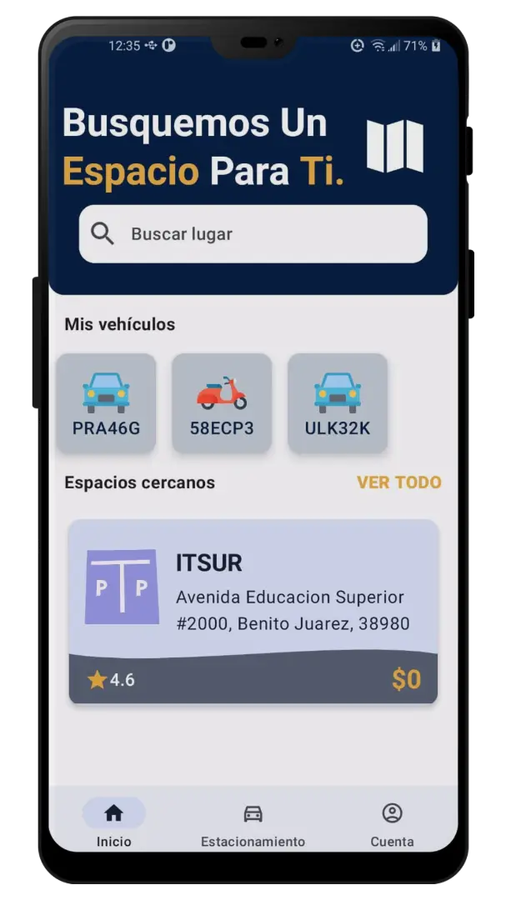
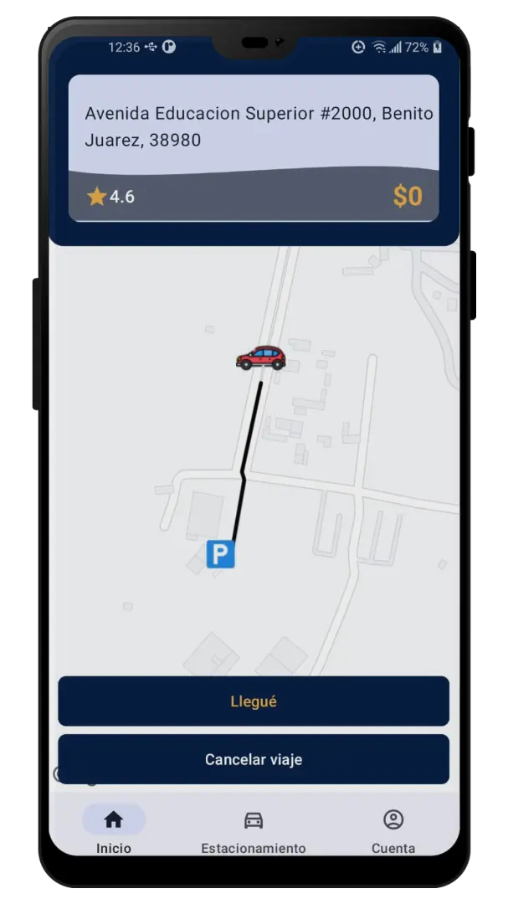

Rumapp es una aplicación móvil freemium para Android que muestra en tiempo real
el transporte público, situación de transito, trazado y descarga de rutas si estás offline, así
como compartir tu ubicación, dentro de la ciudad de Guanajuato capital. Además de mostrar la ubicación
de los estacionamientos, su disponibilidad actual y el tiempo aproximado de espera para que no sufras
a la hora de estacionarte.
Contamos con servicio freemium que divide al usuario en dos niveles: gratuito y premium. Los usuarios gratuitos
tienen acceso limitado en las funciones y anuncios dentro de la app, mientras que los usuarios premium obtienen
acceso total a la aplicación libre de anuncios. Contamos también con paquetes especiales para los turistas y los
estudiantes así como un paquete anual.
¡Que ya no se te pase el camión!
Sabemos muy bien que si viajas a Guanajuato capital en tu automóvil, lo más seguro es que lo único que vas a conocer
es el carro de enfrente y muchos semáforos, es por ello que tomar el transporte público luce como una opción bastante viable,
rentable y agradable. Rumapp es tu guía interactiva para que puedas saber qué rutas del transporte público debes tomar,
a qué hora y en qué punto de la ciudad, ¡Viajar nunca resultó tan fácil!
Nuesta misión es exponer en tiempo real el movimiento del transporte público de Guanajuato capital a través de nuestra aplicación móvil para
convertirnos en la referencia entre aplicaciones del mismo campo; congruentes con las necesidades del usuario.
Recuerda que Rumapp siempre buscará llevarte en la dirección correcta
Funciones Únicas
Rumapp no es una simple guía, con nuestro servicio puedes Planificar Tu Viaje con anticipación para que no desperdicies
tiempo y puedas aprovechar cada minuto en tan hermosa ciudad mítica. Si no sabes que visitar, tranquilo, consulta la sección de Turismo de nuestra app y elige algún punto de interés para comenzar tu travesia.
La app cuenta con un Chat General por si en algún momento necesitas ayuda tanto del equipo de soporte de Rumapp como de más personas
que también utilizan nuestra app.
La seguridad del turista es muy importante para nosotros, es por ello que si te encuentras viajando y deseas que algún amigo, familiar o conocido
sepa en dónde te ubicas entonces puedes hacer uso de Compartir Ubicación para asegurar tu bienestar.
En caso de que no dispongas de conexión a internet, de que tu compañía telefónico te haya quedado mal o simplemente te metiste a un tunel
(situación muy normal en Guanajuato) puedes Descargar las Rutas de transporte público para que puedas viajar offline.
Así mismo, contamos con una sección donde puedes Valorar nuestro servicio, la opinión de los usuarios nos importa muchísimo. Damos soporte
a idioma español e inglés, dispones de una sección dedicada a Ayuda y Soporte y puedes configurar la aplicación a tu gusto en la sección de
Configuración incluso para que puedas alternar entre nuestro tema claro y oscuro.
Descubre Guanajuato
Guanajuato es una ciudad emblemática muy característica por sus múltiples puntos turísticos, si no sabes que puntos
visitar puedes consultarlo desde la aplicación.
Tenemos desde puntos muy concurridos como el famoso Callejón del Beso hasta puntos remotos de la civilización
donde puedes acampar como la Sierra de Santa Rosa. Toda esta información y más también la puedes consultar directamente
en este sitio web en la pestaña de Turismo.
Por el momento nos enfocamos unicamente en Guanajuato capital, esperamos con ansias poder abarcar tu ciudad para apoyar el comercio local,
promover el turismo y brindar una experiencia de viaje única a los usuarios.

¡Encuentra el estacionamiento indicado!
Encontrar estacionamiento nunca había sido tan fácil con Rumapp. ¡Ya no te detengas a preguntar donde estacionarte!
mejor descarga Rumapp y busca los estacionamientos más cercanos o que mejor se ajusten a tu presupuesto. Consulta
el horario laboral y si no hay lugar ¡No te preocupes! contamos con la función de tiempo aproximado de espera para
que esperes a que se desocupe un lugar.
Uso fácil
La aplicación está enfocada prinicipalmente al sistema operativo Android, por el momento no
brindamos soporte a usuarios iOS ¡Pero no te preocupes si eres usuario iOS! pronto haremos todo lo posible
para que te unas a la familia Rumapp.
Estamos en la fase de prototipado, por lo tanto, no encontrarás todavía Rumapp en Google Play Store.
Te pedimos encarecidamente esperar una versión funcional para que ya no necesites correr una cuadra completa para
alcanzar el camión.
Como requisitos mínimos debes considerar disponer de una versión de Android 7.0 o superior, así como 100 MB de espacio
de almacenamiento y 1 GB de RAM.

Requisitos Mínimos
La aplicación está enfocada prinicipalmente al sistema operativo Android, por el momento no
brindamos soporte a usuarios iOS ¡Pero no te preocupes si eres usuario iOS! pronto haremos todo lo posible
para que te unas a la familia Rumapp.
Estamos en la fase de prototipado, por lo tanto, no encontrarás todavía Rumapp en Google Play Store.
Te pedimos encarecidamente esperar una versión funcional para que ya no necesites correr una cuadra completa para
alcanzar el camión.
Como requisitos mínimos debes considerar disponer de una versión de Android 7.0 o superior, así como 50 MB de espacio
de almacenamiento, 1 GB de RAM, procesador mínimo 1 GHz, acceso a la ubicación actual y Wi-Fi o datos móviles.
¡Nuestro Equipo!
Nayeli Cano
CEO
Cristian Alexis
Vicepresidente
Alan Salgado
Gerente de Sistemas
Gabriel Quintino
Desarrollador
Azeneth Rosiles
Contadora
Historia
En el año 2019 se desarrolla la versión inicial de Stream Rutas, siendo sus fundadores
estudiantes de nivel medio superior; quienes gracias a su esfuerzo lograron
ser partícipes del concurso: “Emprendedores 2020” en el tecnológico CBTis 217.
En 2020, la aplicación llegó a ocupar un lugar a nivel nacional dentro de la convocatoria
“Emprendedores 2020”, sin embargo, fue necesario detener el concurso debido a la pandemia
global por el virus COVID 2019.
No obstante, a inicios del presente año 2023, se ha logrado retomar el proyecto con la renovación
de los integrantes del equipo, estudiantes pertenecientes al IT. del Sur de Guanajuato.
El proyecto realizó su primera participación en mayo, en el concurso de prototipos InnovaTecNM 2023 etapa local
realizado en el Campus TecNM antes mencionado, en la categoría Industrias Creativas, obteniendo el segundo lugar
en la feria y alcanzando el pase a la etapa regional.
La etapa regional (región IV) se llevó a cabo a mediados de septiembre en el Instituto Tecnológico de San Luis Potosí, donde
Rumapp obtuvo el primer lugar de la feria en la misma categoría, logrando su acreditación a la etapa nacional
a celebrarse en Puebla. Rumapp sigue escribiendo su historia.